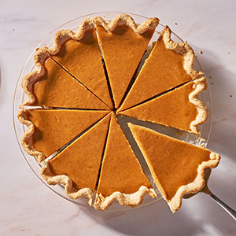
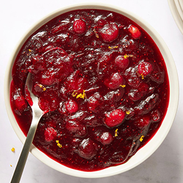
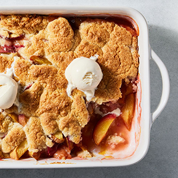
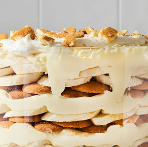

Sweet Potato Pie
Ingredients
- 1 1/2 lb. sweet potatoes (about 3 medium)
- All-purpose flour, for rolling
- 1 batch basic pie dough, chilled
- 3 large eggs 3/4 c.
- heavy cream 2/3 c. (135 g.)
- dark brown sugar 4 tbsp.
- (1/2 stick) unsalted butter, softened 2 tsp.
- pure vanilla extract 1 1/2 tsp.
- ground cinnamon 1 tsp.
- ground nutmeg 1/2 tsp.
- kosher salt
- Preheat oven to 425° and line a baking sheet with foil. Pierce potatoes on all sides with a fork and arrange on prepared sheet. Roast until completely tender, 45 to 50 minutes. Let sit until cool enough to handle.
- Meanwhile, on a lightly floured surface, roll pie dough to a 1/4"-thick round. Lift and carefully transfer to a glass or metal 9" pie pan. Lift up edges and allow dough to slump down into dish (do not stretch).
- Using a sharp knife or kitchen shears, trim edges of dough, leaving about a 1/4" overhang. Fold excess dough underneath dough on top rim of pie pan. Using clean fingers, crimp to seal. Refrigerate until cold, about 30 minutes.
- Place a rack in center of oven; preheat to 375°. Cut a large square piece of foil or parchment and scrunch to wrinkle. Line dough with scrunched foil, then fill to the brim with pie weights, uncooked rice, or dried beans.
- Bake crust until top and sides are dry and set, 18-20 minutes. Remove foil with pie weights. Continue to bake until bottom is dry and set, about 5 minutes more. Let cool. Reduce oven temperature to 350°.
- Peel potatoes and trim off any overly caramelized patches. Measure 2 cups (about 450 grams) potato and transfer to a food processor. Pulse, scraping down sides as needed, until well blended. Add eggs, cream, brown sugar, butter, vanilla, cinnamon, nutmeg, and salt. Continue to pulse, scraping down sides every 30 seconds, until smooth, about 90 seconds total.
- Pour filling into crust. Bake pie until filling is puffed and set around the outside and just slightly jiggly in the middle, 40 to 50 minutes. Let cool before slicing and serving.
Content for New article Tag Goes Here
Best Tomato Soup
Ingredients
- 4 tbsp. unsalted butter
- 2 stalks celery, thinly sliced (about 1 c.)
- 1/2 yellow onion, thinly sliced (about 1 c.)
- 1/2 small fennel bulb, thinly sliced (about 1 c.)
- 2 tsp. kosher salt, divided 2 tbsp.
- tomato paste 1/4 tsp.
- crushed red pepper flakes 2 (28-oz.)
- cans whole peeled tomatoes 1 1/2 c.
- tomato juice (from a 12-oz. can) 1 tbsp.
- light brown sugar 1/2 c.
- heavy cream, plus more for drizzling 1/4 c.
- fresh basil leaves
- In a large pot over medium heat, melt butter. Add celery, onion, fennel, and 1/2 teaspoon salt and cook, stirring occasionally, until softened and translucent, 7 to 8 minutes. Add tomato paste and cook, stirring frequently, until darkened, about 2 minutes. Add red pepper and cook, stirring, until fragrant, about 1 minute more.
- Add whole tomatoes with their juices, tomato juice, and brown sugar. Bring to a simmer, mashing down on tomatoes with a wooden spoon or rubber spatula to break into large pieces, and cook, stirring occasionally, until slightly reduced, about 10 minutes. Remove from heat and let cool slightly, about 5 minutes.
- Transfer half of tomato mixture to a standard blender and blend until smooth (or use an immersion blender and puree in pot). Pour blended soup into a large bowl and repeat with remaining tomato mixture. Return soup to pot and stir in cream. Cook over medium heat, stirring frequently, just until warmed through (do not let it boil); season with remaining 1 1/2 teaspoons salt.
- Divide soup among bowls. Drizzle with cream and top with basil.
Content for New article Tag Goes Here

Homemade Cranberry Sauce
Ingredients
- 1 c. (200 g) granulated sugar
- 12 oz. fresh or frozen cranberries
- 2 tsp. finely grated orange zest
- Pinch of kosher salt
- In a small saucepan over low heat, combine sugar and 1 cup water, stirring until sugar dissolves. Add cranberries and cook, stirring occasionally, until they burst and mixture is thickened, about 10 minutes.
- 2 Stir in orange zest and salt. Let cool.
- Make Ahead: Cranberry sauce can be made 1 week ahead. Transfer to an airtight container and refrigerate.
Content for New article Tag Goes Here

Peach Cobbler
Ingredients
- 10 to 12 ripe peaches (about 4 lb. total), pitted, sliced 1/2" thick
- 2 tbsp. cornstarch
- 2 tbsp. granulated sugar
- 1/2 tsp. ground cinnamon
- 1 1/2 c. (180 g.) all-purpose flour
- 1 c. (200 g.) granulated sugar
- 2 tsp. baking powder
- 3/4 tsp. ground cinnamon
- 1/2 tsp. kosher salt
- 1/2 c. (1 stick) cold unsalted butter, cut into cubes
- 1/2 c. buttermilk Vanilla ice cream, for serving (optional)
- In another large bowl, whisk flour, granulated sugar, baking powder, cinnamon, and salt. Add butter and work into dry ingredients with your fingertips until pea-sized pieces form. Add buttermilk and stir with a rubber spatula until combined.
- Pour peaches and all juices into a 13"x9" baking pan. Drop topping by the spoonful over top of peaches.
- Bake cobbler until topping is golden brown and peaches are tender, 40 to 50 minutes. Let cool 15 minutes. Serve warm topped with ice cream (if using).
Content for New article Tag Goes Here

Banana Pudding
Ingredients
- 1 (14-oz.) can sweetened condensed milk
- 1 1/3 c. whole milk
- 1 (5.1-oz.) package instant vanilla pudding mix
- 3 c. heavy cream 1 tsp. pure vanilla extract
- 1 (12-oz.) box vanilla wafer cookies
- 4 bananas, sliced into coins
- 2 tsp. granulated sugar
- In a large bowl, whisk condensed milk, whole milk, and pudding mix, breaking up any lumps. Refrigerate until set, about 5 minutes.
- Meanwhile, in another large bowl, using a handheld mixer on medium-high speed, beat cream and vanilla until stiff peaks form, 2 to 3 minutes. Set aside half of whipped cream for serving. Fold remaining whipped cream into milk mixture.
- Cover bottom of a 3-quart trifle dish with wafers. Top with one-third of pudding mixture. Cover with another layer of wafers. Top with an even layer of banana slices. Continue to layer pudding, wafers, and bananas until you reach the top, ending with a final layer of pudding. Set aside remaining wafers for serving.
- Refrigerate at least 3 hours or up to overnight.
- Add granulated sugar to reserved whipped cream and stir to combine. Dollop on top of banana pudding. Crumble reserved wafers, then sprinkle over pudding.
Content for New article Tag Goes Here
Content for New main Tag Goes Here